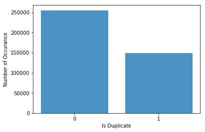
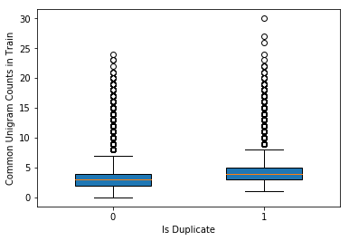
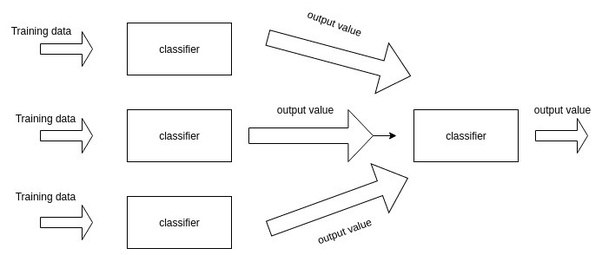

- We explored the current methods in NLP, including word2vec embedding (gensim package in python), LSTMs(use keras neural networks API), tf-idf, python nltk package, etc.
- We built machine learning models which identified duplicate Quora question pairs with high accuracy (logloss ~0.151)
- We are ranked top 8% in this Kaggle competition among 3307 teams who participated, and got a Bronze Medal.
Table of Contents
- Problem to Solve
- [Methods Overview] (## Methods Overview)
- EDA of Quora Dataset
- Feature Engineering
- Machine Learning Models
- Model Ensemble
Problem to Solve - Identifying Duplicate Questions
Quora is a question-and-answer online platform where questions are asked, answered, edited and organized by its community of users. Very often, people ask differently worded questions but with the same meaning. Multiple questions with the same intent cause the seekers more time to find the best answers to their questions, and also cause the writers feel they need to answer multiple versions of the same question. Identifying duplicate questions will provide better experience for both the users and writers.
For example, the following question pairs are duplicates:
-
question 1: How do I read and find my YouTube comments? vs question 2: How can I see all my Youtube comments?
-
question 3: What are some examples of products that can be make from crude oil? vs question 4: What are some of the products made from crude oil?
The following question pairs are not duplicates:
-
question 5: What is the step by step guide to invest in share market? vs question 6: What is the step by step guide to invest in share market in india?
-
question 7: What's causing someone to be jealous? vs question 8: What can I do to avoid being jealous of someone?
Methods Overview:
To identify duplicate questions, we extracted features from text data including basic NLP, word2vec embedding, TF-IDF, LSTMs. We trained the features with Random Forest model, xgboost model, logistic regression and neural networks. Finally, we ensembled 12 models to make the final model more robust and to improve accuracy.
EDA of Quora Dataset
The Quora dataset provided by Kaggle contains a train dataset and a test dataset. The train dataset consists 404290 question pairs with each pairs labeled as 1(duplicate) or 0 (not duplicate). The test dataset consists 2345796 question pairs without labels, which is 5.8 fold as much as the train dataset. Evaluations are based on logloss between the predicted value and ground truth.
Let's take a look at the dataset.
Data fields: id - id of the question pairs; qid1 - id of question 1; qid2 - id of question 2; question1 - full text of question 1; question2 - full text of question 2

Data distribution by label

We did Exploratory Data Analysis (EDA) and found the following features between train and test dataset. The values in train and test dataset are very close.
number of words: - Median in train: 10.0 test: 10.0 - Average in train: 11.06 test: 11.02 - Maximum in train: 237 test: 238 - Minimum in train: 1 test: 1
number of characters: - Median in train: 51.0 test: 53.0 - Average in train: 59.82 test: 60.07 - Maximum in train: 1169 test: 1176 - Minimum in train: 1 test: 1
We found that the number of common words between question pairs may be a good feature in building our prediction model.

Feature Engineering
Feature engineering is a major part in building good machine learning models. We applied various methods to extract features from text data. We used the following feature engineering methods, including basic features, NLP features, word2vec features, TF-IDF transformation features, LSTM features as well as leaky features. I will cover each methods as follows.
Basic Features
We crafted the following 18 basic features:
| Feature | Description |
|---|---|
| len_q | length of characters in question inclduing whitespaces |
| len_char_q | number of characters in question without whitespaces |
| diff_len | difference in character length between question pairs |
| char_diff_unq_stop | difference in number of characters between question pairs after filtering stop words |
| char_ratio | ratio of character length between question pairs |
| len_word_q | number of words in question |
| wc_diff | difference in number of words between question pairs |
| wc_diff_unique | difference in number of unique words between question paris |
| wc_diff_unq_stop | difference in number of unique words between question pairs after filtering stop words |
| wc_ratio | ratio of word length between question pairs |
| wc_unique_ratio | ratio of unique word length between question pairs |
| wc_ratio_unique_stop | ratio of unique word length between q1 and q2 after filtering stop words |
| total_unique_words | number of unique words in each question pair |
| total_unique_words_w_stop | number of unique words in each question pair after filtering stop words |
| common_words | number of common words in each question pair |
| word_match | number of common words in question pairs over total number of words in question pairs after filtering stop words |
| 2_SWC | word match using 2-grams |
| 3_SWC | word match using 3-grams |
| 1_SWC_w_stops | word match after filtering stop words |
| 2_SWC_w_stops | word match using 2-grams after filtering stop words |
| 3_SWC_w_stops | word match using 3-grams after filtering stop words |
| Jaccard | the shared words count over total words count in each question pair |
| same_start | return 1 if a question pair has same start word, otherwise return 0 |
NLTK Features
We used nltk package in Python, and crafted the following features.
| Feature | Description |
|---|---|
| WC_NN | number of common nouns in each question pair |
| WC_CD | number of common numbers in each question pair |
| WC_VB | number of common verbs in each question pair |
| WC_JJ | number of common adjective in each question pair |
| nonlatin_shared | number of common nonlatin characters in each question pair |
| havewhat | return 1 if a question contains what, otherwise return 0 |
| havewhen | return 1 if a question contains when, otherwise return 0 |
| havewho | return 1 if a question contains who, otherwise return 0 |
| havewhy | return 1 if a question contains why, otherwise return 0 |
| havehow | return 1 if a question contains how, otherwise return 0 |
| nonascii | return 1 if a question contains nonascii characters, otherwise return 0 |
| nonlatin | return 1 if a question contains nonlatin characters, otherwise return 0 |
Word2vec features
Word2vec is a two-layer neural network model that is used to produce word embeddings. Word2vec takes a large corpus of text as input and produces a vector space of several hundreds dimensions. Words with similar meanings are close in distance in their vector space. We imported the Google pretrained word2vec model, and run the model using the gensim package in python. It outputs a vector for each word in our data. Then, we computed the distance features which measures the similarity between vectors, the skewness and kurtosis features which measure the shape of the distribution.
| Feature | Description |
|---|---|
| 1_ND | normalized word mover distance |
| 2_ND | normalized word mover distance using 2-grams |
| 3_ND | normalized word mover distance using 3-grams |
| 1_ND_w_stops | normalized word mover distance after filtering stop words |
| 2_ND_w_stops | normalized word mover distance using 2-grams after filtering stop words |
| 3_ND_w_stops | normalized word mover distance using 3-grams after filtering stop words |
| cosine_distance | cosine distance |
| cityblock_distance | cityblock distance |
| jaccard_distance | jaccard distance |
| canberra_distance | canberra distance |
| euclidean_distance | euclidean distance |
| minkowski_distance | minkowski distance |
| braycurtis_distance | braycurtis distance |
| skew_q1vec | skewness of q1 vector |
| skew_q2vec | skewness of q1 vector |
| kur_q1vec | kurtosis of q1 vector |
| kur_q2vec | kurtosis of q2 vector |
TF-IDF features
tf-idf, short for term frequency-inverse document frequency, is a numerical statistic that measures the importance of a word in a sentence. The importance is denoted by term frequency in a sentence (tf), and offset by the frequency of the word in corpus(idf).
![alt text][tfidf]
For example, in the sentence 'How do I read and find my YouTube comments?', 'I' has the same term frequency as 'Youtube', but 'I' has a higher frequency than 'Youtube' in the corpus, so the high frequency of 'I' in this sentence is offset by the high frequency of 'I' in corpus, so 'I' is not important. On the other hand, 'Youtube' has a high frequency in this sentence and low frequency in the corpus, so 'Youtube' is still considered as important. Therefore, 'Youtube' has better prediction power than 'I'. In other words, the more rare a term is, the larger idf.
After tfidf transformation, we crafted the following features
| Feature | Description |
|---|---|
| tfidf_wm | word match after tfidf |
| tfidf_wm_stops | word match after tfidf and filtering stop words |
| 2_SWC_IDF | word match using 2-grams after tfidf |
| 3_SWC_IDF | word match using 3-grams after tfidf |
| 2_SWC_IDF_w_stops word match using 2-grams after tfidf and filtering stop words | |
| 3_SWC_IDF_w_stops word match using 3-grams after tfidf and filtering stop words | |
| 1_ND_IDF | normal distance after tfidf |
| 2_ND_IDF | normal distance using 2-grams after tfidf |
| 3_ND_IDF | normal distance using 3-grams after tfidf |
| 1_ND_IDF_w_stops | normal distance after tfidf and filtering stop words |
| 2_ND_IDF | normal distance using 2-grams after tfidf and filtering stop words |
| 3_ND_IDF | normal distance using 3-grams after tfidf and filtering stop words |
LSTMs (Long Short Term Memory networks) features
LSTMs is a special kind of recurrent neural network (RNN) which works very well in predicting sequential patterns such as text, speech, audio, video, physical processes, time series(sensor) data, anomaly detection, etc. The details of LSTMs are well explained in the blog post by Christopher Olah, and the blog post by Brandon Rohrer.
We converted each word in our dataset to an unique integer identifier after data clean and preprocessing. By Keras default embedding, it was converted to a embedding matrix. Feeding the embeding matrix to LSTMs, we obtained the output from 32 neurons which gives us 32 LSTM features.
Leak features
Leak features are playing an important role in this competition. It is useful in competition but not practical in real world projects because we do not know the true target value for test dataset.
| Feature | Description |
|---|---|
| q1_frequency | the number of times question1 appearance in the dataset |
| q2_frequency | the number of times question2 appearance in the dataset |
| q1_q2_intersect | the number of shared questions question1 and question2 all formed question pairs with in the dataset |
Machine Learning Models
We have built models including xgboost, random forest, logistic regression, neural network, and support vector machines. Using different subsets of data, we built a total of 12 models. The best single model is a xgboost model with 83 features, it gives 0.15239 logloss on the public leaderboard.
Model Stacking
There are several ways to ensemble models, the most widely used methods include bagging, boosting and stacking. Here,
we use stacking. The basic idea of stacking is to build different models which output intermediate prediction, also
called meta features. Those meta features are combined and fed into a new model to predict target.

We stacked 12 models. Logloss reaches 0.15146 on the public leaderboard, which is almost 0.001 improvement on the best single model.
It was so much fun and a great learning experience working on the Quora project with my talented team members. Thank you !